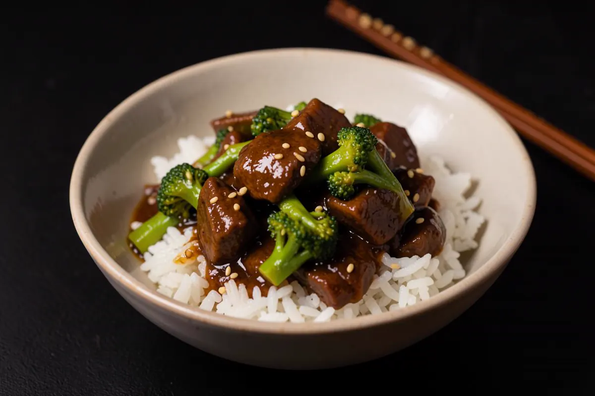

Beef & Broccoli Stir Fry

Illustrative image.
A good beef and broccoli stir fry depends on heat and timing rather than a long ingredients list. The beef is sliced thin against the grain, seared hard in a very hot pan, and returned to the skillet at the last minute so it stays tender while the broccoli keeps its snap.
The sauce is built from soy, brown sugar and a cornstarch slurry, which thickens in seconds and coats everything in a glossy dark glaze. Total time from fridge to table is about half an hour, most of it chopping.
Ingredients
- 1 lb flank steak, thinly sliced against the grain
- 3 cups broccoli florets
- 3 cloves garlic, minced
- 1 tbsp fresh ginger, minced
- 1/3 cup low-sodium soy sauce
- 2 tbsp brown sugar
- 1 tbsp cornstarch, mixed with 2 tbsp water
- 2 tbsp vegetable oil
- 1 tsp sesame oil
- Steamed rice, for serving
Instructions
- Whisk together soy sauce, brown sugar, and the cornstarch slurry in a small bowl. Set aside.
- Heat 1 tbsp vegetable oil in a large skillet or wok over high heat. Add the beef in a single layer and sear for 1-2 minutes per side until browned. Remove and set aside.
- Add the remaining oil to the pan, then add broccoli. Stir-fry for 3-4 minutes until bright green and just tender.
- Add garlic and ginger, cooking for 30 seconds until fragrant.
- Return the beef to the pan and pour in the sauce. Toss everything together and cook for 1-2 minutes until the sauce thickens and coats the beef and broccoli.
- Drizzle with sesame oil and serve immediately over steamed rice.
Why this recipe works
Flank steak is flavourful and lean, and slicing it across the grain shortens the muscle fibres so each piece chews easily. Cooking the beef in a single layer at high heat browns it instead of steaming it, and adding the cornstarch slurry at the end gives the sauce body without reducing it for ages.
Tips for success
- Freeze the steak for fifteen minutes before slicing. Firm meat is much easier to cut into thin, even strips.
- Pat the beef dry and sear it in batches. A crowded pan drops in temperature and the meat releases water instead of browning.
- Add the cornstarch slurry off the heat, stir for a few seconds, then return to the burner briefly until the sauce thickens.
Substitutions that work
- Sirloin, flap steak or skirt steak can stand in for flank. Avoid stewing cuts, which need long, slow cooking.
- Tamari or coconut aminos work in place of soy sauce for a gluten-free version; adjust the salt accordingly.
- Broccolini, green beans or snap peas can replace the broccoli, though the cooking time will change slightly.
Storage and make-ahead
Keep leftovers covered in the refrigerator for three days. Reheat in a hot skillet with a splash of water rather than in the microwave, which softens the broccoli. The stir fry does not freeze well because the broccoli turns limp on thawing.
Serving suggestions
Spoon it over steamed jasmine rice, noodles or cauliflower rice, and add extra chili oil at the table if you want heat. A cucumber salad on the side balances the saltiness of the sauce.
Frequently asked questions
What cut of beef is best for stir fry?
Flank, sirloin or skirt. They are lean, slice cleanly and stay tender with a short, hot cook, unlike chuck or round.
Why is my stir fry sauce thin?
The cornstarch slurry needs a brief simmer to activate. Mix the cornstarch with cold water first, add it at the end, and stir until the sauce coats the back of a spoon.
Can I use frozen broccoli?
Yes, but thaw and drain it first, then add it later in the cooking so it does not release water into the pan and dilute the sauce.